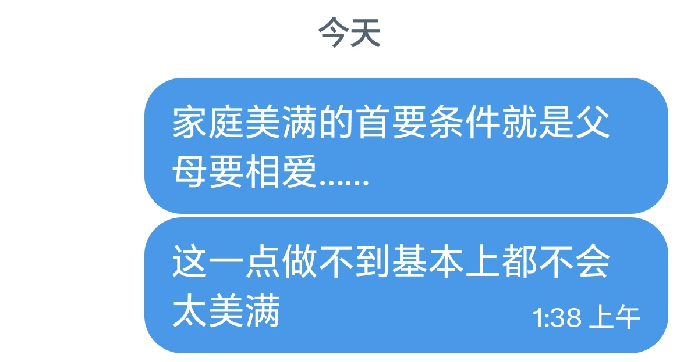

432InfantryRegiment
@432Ifantrygroup
@ying040507ying 又是这个落后、不科学的逆天观念

小笼灌汤包
@ying040507ying
小时候调皮偷看了妈妈少女时期的日记 发现了她和爸爸认识的全过程 发现她是怎样因为第一次没流血而被爸爸抛下 我不知道后来他们又如何相遇为何结婚 我只知道她没有婚纱照没有三金没有彩礼 爷爷奶奶也看不起这个倒贴嫁进来的儿媳妇 好心伺候了爸爸家半辈子 一朵玫瑰花也没收到过 我劝她离婚 她说她爱他 https://t.co/ZIjNlfPezH